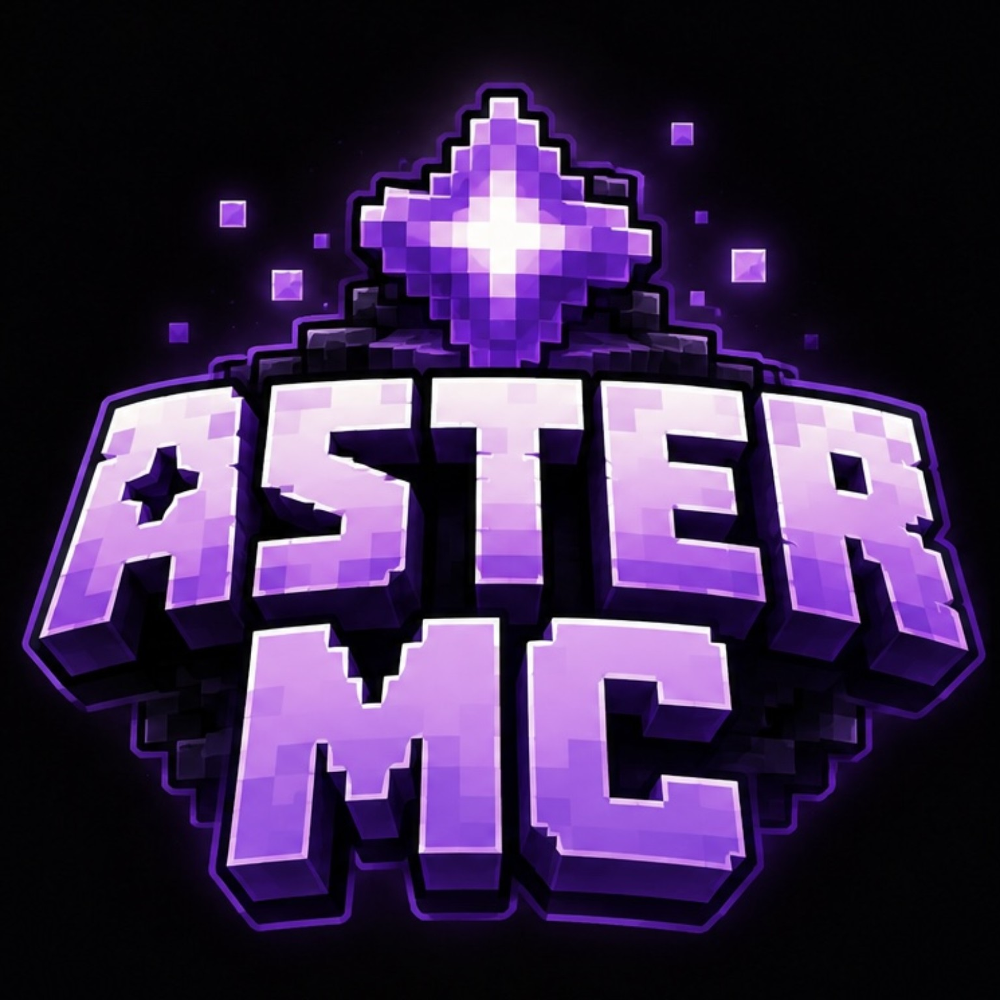

CaseManager
A Minecraft moderation case-management plugin built around cases, evidence, timelines, investigators, notes and Discord integration.
JavaSpigotMySQLDiscord
Hey, I'm
Minecraft plugin developer & Discord bot developer.
I like making useful things, figuring out how they work, and learning something new with every project.
THE SHORT VERSION
Most of my projects start with an idea, turn into a lot of experimenting, and eventually become something I can actually use.
SELECTED WORK
Projects are where I spend most of my time.
A Minecraft moderation case-management plugin built around cases, evidence, timelines, investigators, notes and Discord integration.
A custom Discord bot with support tools, moderation, automation and server utilities.
A small place to show what I'm working on without filling it with unnecessary stuff.
ABOUT
I'm Grate. I build Minecraft plugins and Discord bots, and I'm learning other parts of development along the way.
I prefer practical projects over endlessly reading about a technology. Building something gives me a reason to understand it properly — and there's always another thing to improve.
COMMUNITY

I'm part of the moderation team at Aster MC, a Minecraft community.
Open Discord ↗